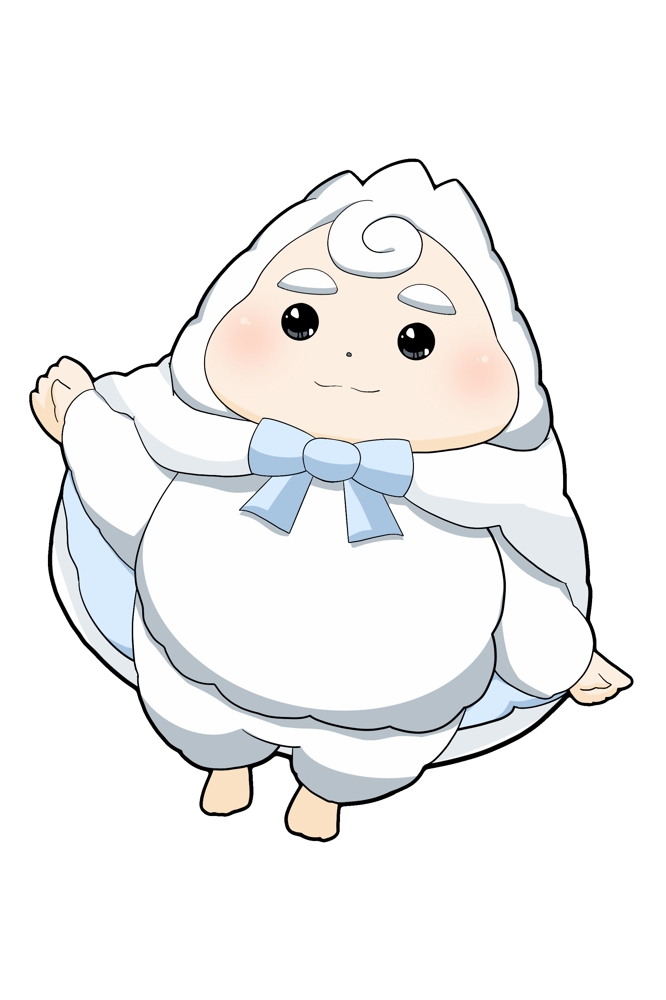
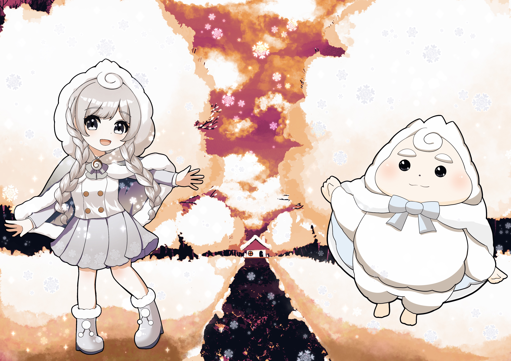
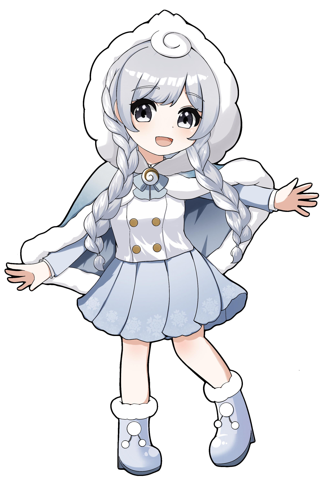

Character 01
さとゆき
水色のもこもこマントをまとった、イエティ族の小さな妖精。 雪の森で暮らしながら、毎日の気持ちにそっと寄り添います。
- すきなもの
- 雪、ふわふわしたもの、あたたかい飲みもの
- 性格
- のんびり、やさしい、少しマイペース
Original Character Project
しずかな森の、ちいさな物語。
雪の森で暮らす、さとゆきとゆきの公式サイトです。
イラスト、スタンプ、雑貨のお知らせをまとめています。

About
しずかな雪の森にある、小さな物語の場所。 さとゆきとゆきのイラスト、スタンプ、雑貨のお知らせをまとめるオリジナルキャラクタープロジェクトです。
Character

Character 01
水色のもこもこマントをまとった、イエティ族の小さな妖精。 雪の森で暮らしながら、毎日の気持ちにそっと寄り添います。

Character 02
雪の森を見守る、やさしい冬のまもりびと。 さとゆきのそばで、小さな願いや記憶を静かに受け止めています。
Stamp / Shop
さとゆきとゆきのLINEスタンプ、雑貨、グッズのお知らせをこちらにまとめていきます。
現在準備中です。
LINEスタンプ準備中News
Links